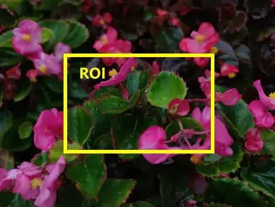
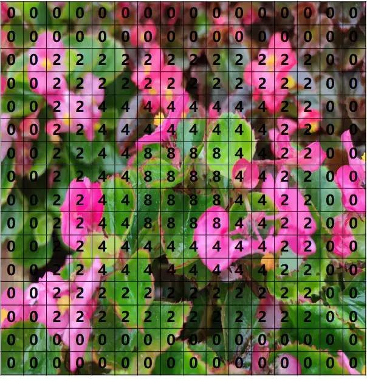

AE（自動曝光）概念及基本原理
1. 概念介紹
自動曝光（Auto Exposure, AE）對於拍照或攝影至關重要。
- 曝光過度：畫面整體太亮，會損失很多細節。
- 曝光不足：畫面太黑，細節同樣看不見。
- 核心目標：將畫面亮度穩定在合適的區間，而非追求與目標亮度完全相等，以避免頻繁調節導致畫面閃爍。

2. 曝光三要素
曝光主要由光圈、快門、感光度（ISO/增益）三個要素決定，可比喻為接水過程：

| 要素 | 功能描述 | 比喻 (接水) |
|---|---|---|
| 光圈 | 控制進光量；影響景深 | 水龍頭開關大小 |
| 快門 | 控制曝光時間；影響動態模糊 | 開水龍頭的時間長短 |
| 感光度/增益 | 底片對光的敏感度；影響噪點與畫面細膩度 | 濾網孔徑的大小 |
- 光圈：越大進光量越大，景深越小（背景易虛化）；越小進光量越小，景深越大（背景不易虛化）。
- 快門：越長畫面越亮，移動物體拖影越明顯；越短畫面越暗，拖影越不明顯。
- 感光度：越大畫面越亮，噪點越明顯；越小畫面越暗，畫面越細膩。
3. 基本工作原理
AE 系統透過統計亮度並與目標亮度比對來調整參數。
- 統計亮度與 ROI統計亮度：最簡單的方式是將指定區域內所有像素點的值加起來。
- ROI (Region of Interest)：感興趣區域，用於指定計算統計亮度的範圍。常見設定為整個畫面、居中區域，或車載產品中常用的「居中偏下」區域。
如圖所示，用最簡單的方式理解統計亮度，可以將黃框內所有圖元點的值加起來作為當前畫面的統計亮度。而目標亮度就是在不同環境下採集的統計亮度的值。

- 曝光區域權重：將畫面劃分為網格（如 16x16），每一塊區域有不同的權重值。權重越高，該區對整體亮度計算影響越大；權重為 0 則表示不參與計算。
如圖所示為一個16*16的曝光區域權重，一般情況下的曝光權重是與整個畫面對應的。每一塊的值代表了該區域參與最終計算最終統計亮度的權重值，權重值越高表示該區域對整體畫面亮度越大，權重為0表示畫面亮度與該區域沒有關係。

調節邏輯
- 當統計亮度 > 目標亮度：降低曝光時間和增益，使畫面變暗。
- 當統計亮度 < 目標亮度：增大曝光時間和增益，使畫面變亮。
- 透過設置不同的增益等級對應不同目標亮度，並進行插值計算，即可得到簡單的自動曝光模組。
4. 曝光策略
在一般相機光圈固定的前提下，AE 主要調節曝光時間與增益。
如果我要畫面變亮一些，我既可以增大光圈，也可以增大曝光時間，還可以增大感光度，那到底採用哪種方式呢？答案是根據應用場景採取策略。比如，在拍風景照時，經常有近景和遠景，那麼要使畫面都對焦清晰就需要較大的景深，因此需要用小光圈。再比如，拍運動物體時，如果曝光時間較長，那麼拍到的運動物體會是模糊到根本看不清，此時就需要減少曝光時間，增大感光度來提升亮度。。。這些就是曝光策略的部分，不過除了單反相機，一般相機的光圈都是固定的，這裡會只關注曝光和增益部分的調整。
- 基礎策略：當畫面變暗時，先增加曝光時間，待達到最大值後再增加增益；反之，畫面變亮時，先減小增益再減少曝光時間。
如圖所示，橫坐標表示增益的大小（增益越大，畫面越暗），縱坐標表示曝光時間。這是最常見的策略就是跟隨箭頭的方向，當畫面逐漸變暗時，先走曝光時間，等到曝光時間達到最大之後再增加增益；反之，當畫面從極黑逐漸變亮時，先減小增益再調小曝光時間。當然採取這種策略也會存在一些限制，比如，一般情況下晴天白天的曝光時間比較短，增益為0dB，而黃昏場景曝光可能比較大，增益也為0dB，但是晴天白天場景的亮度遠遠高於黃昏場景，而如果黃昏時採用白天場景的參數可能噪點會非常明顯，因為相機內一般不同的參數是根據增益來進行區分的。

- 優化策略：針對不同場景（如白天與黃昏），可採取階梯式調整（例如先增長部分曝光時間，再走小部分增益，依此循環），藉由不同的增益等級來區分場景參數，降低噪點。
因此這種情況下，可以將曝光策略更改當畫面逐漸變暗時，先增大一部分曝光時間，再走一小部分增益；再增大曝光時間，等到曝光時間達到最大之後再增加增益。這樣的情況下，可以讓晴天白天的場景對應於圖中藍色箭頭段，而黃昏場景端對應于紅色箭頭段，增益的不同就能區分兩個場景來設置不同的參數，當然具體設置什麼時候作為拐點需要經過實際測試。曝光策略的還有一個就是增益的策略，曝光時間只有一個，但是增益會有AG(Analog Gian)、DG(Digital Gain)、ISP Gain、可能還會有CG(Conversion Gain)，先起用哪個再啟用哪一個也是有講究的，其中，AG、DG和CG都屬於Sensor增益，是在Sensor端生效的，而ISP Gain是在ISP端生效的。

- 增益類型與順序：
- Sensor 增益：包括 AG (類比增益)、DG (數位增益)、CG (轉換增益)。Sensor 手冊通常會規定先走滿 AG 再走 DG。
- ISP Gain：在 ISP 端生效。主要用於補償曝光行劇烈變化引起的亮度突變，或輔助 HDR 合成（如透過調整 ISP DG 來控制長短幀合成比重）。
增益小結：Sensor端的增益（AG/DG/CG）是在影像信號處理的早期階段介入，而ISP Gain則在後端。通常，優先使用類比增益（AG）可以獲得更好的信噪比，數位增益（DG）則應謹慎使用，因為它會放大噪點。